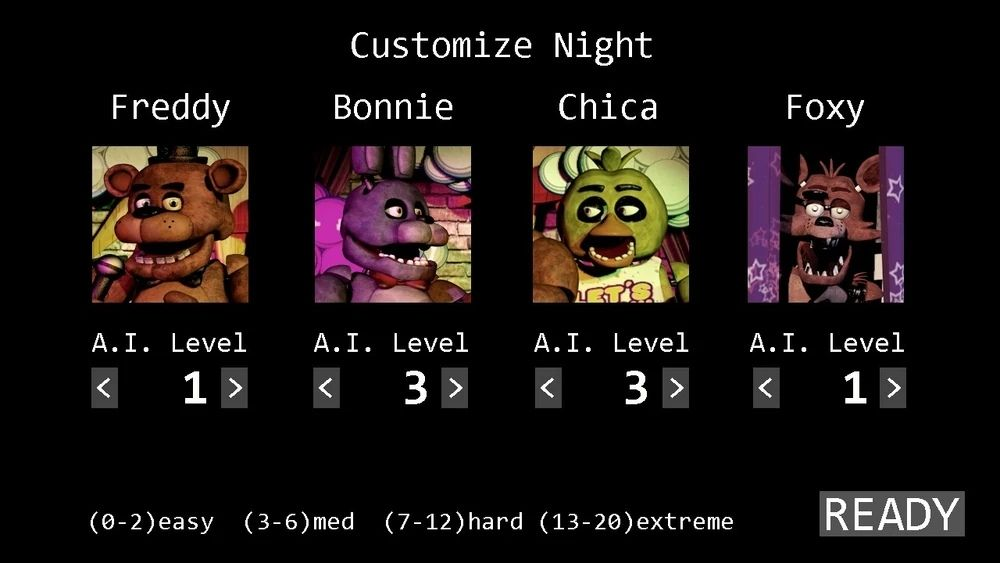
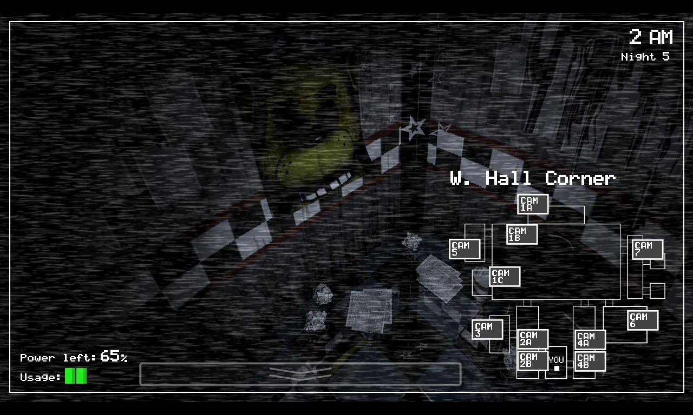

Ai Levels
The Ai levels are the main way that the animatronics move and attack. while not being seen until the custom night, the Ai level system is used throughout the game.
Here is a table showing the Ai level for every night.
| Night | Freddy | Bonnie | Chica | Foxy |
|---|---|---|---|---|
| Night 1 | 0 | 0 | 0 | 0 |
| Night 2 | 0 | 3 | 1 | 1 |
| Night 3 | 1 | 0 | 5 | 2 |
| Night 4 | 1/2 | 2 | 4 | 6 |
| Night 5 | 3 | 5 | 7 | 5 |
| Night 6 | 4 | 10 | 12 | 16 |
Level Raises
Even though they start at Ai level zero. Some of the animatronics levels will slowly raise
over the course of a night.
Bonnie's level will raise by 1 at 2am.
Everyones level
except freddy will increase by 1 level at 3am.
And the same thing happems at 4am.
As seen freddy does not get any level increase, meaning if he is at 0 then he is deactivated
for the night.
Movement Opportunity
With the Ai levels explained, its time to explain how the animatronics move and attack.
The game will generate a number from 1 to 20. If the Ai level of an animatronic is equal to
or greater than the generated number then the animatronic will succeed and move. Thus completing
the movement opportunity or MO for future reference.
The MO of every animatronic is timed slightly off
Heres a table showing how long each animatronic takes for a MO.
| animatronic | Time (seconds) |
|---|---|
| Freddy | 3.02 |
| Bonnie | 4.97 |
| Chica | 4.98 |
| Foxy | 5.01 |
Power
Every night the player will start with 100% power and over the course of the night
the power will drain. Depending on what the player does more or less power may be consumed.
Even if the player does nothing there will always be slight constant power loss. With every night after having a
faster drain of power.
| Night | Seconds to lose 1% |
|---|---|
| Night 2 | 6 Seconds |
| Night 3 | 5 Seconds |
| Night 4 | 4 Seconds |
| Night 5 | 3 Seconds |
Animatronics
With most of the main game mechanics explained, its time to talk about the animatronics and the specifics with each one.
Bonnie & Chica
Bonnie and chica pretty much act the same, with Bonnie taking the left side of the
restaurant and Chica taking the right side.
They will both start on the stage
and will take their own route to the office. Once they make it to the office door they
will attempt to make it in the office. If the doors are closed then they will reset back to
the dining room.
If the door isn't closed and they succeed on their MO then they will enter
the office. The player will not be able to close the doors and will be jumpscared after picking up the camera and puting
it back down. If the player has the camera up still after either Bonnie or Chica entered then after 30 seconds the animatronic
will forcfully pull down the camera and jumpscare the player.
Foxy
Foxy, for the most part, will stay in pirates cove. For every successful MO he will move into his next phase. Each phase showing him
leaning out of pirates cove. Once Foxy reaches his fourth phase he will start running toward the office.
The way to slow foxy down is to
use the cameras. When the player has his camera up, no matter what, foxy will always lose his MO. After the camera is put down, foxy will be
stuck in this frozen state from anywhere between 0.83 seconds to 16.67 seconds.
Freddy
Freddy is the most interesting animatronic since unlike the other ones, once freddy makes it to his destination he will stay there. (Cam 4b)
Along with his normal MO freddy also has a second way to move. Freddy has a countdown and once the countdown reaches zero he will move up
one space towards the players office, with the countdown starting at 15 seconds. Freddy also has the same freeze effect with the cameras up, just like foxy, the freeze will both cause him to
fail his MO and pause his countdown. After the player puts down the camera freddy will return normal and the countdown will start back up again. He will
make it to his destination wether the player wants to or not.
The countdown is also different every night, with the increase of freddys Ai level shaving
off about 1.67 seconds.
Once freddy makes it to the spot (Cam 4b) his mechanics change a little. The countdown is stopped, since he doesnt need to move much anymore
and he loses the ability to be frozen by the camera. The one gain the player gets is freddy can only attack when the player is using the cameras anywhere but his spot. He will also fail
if the door is closed too.
Zero Power
Now what happens when the player doesnt manage their power well and has none left.
Immediatly the room lights shutoff and the doors all open if closed. For every 5 seconds there is a
20% chance that the player will enter the next phase, after 20 seconds the next phase will start.
Freddy's eyes will light up the right door and his infamous toreador march jingle will
start to play. This phase has the same properties as the first one.
Once the phase ends the final phase begins, freddy's eyes will stop lighting up and the music will go silent. The final phase
is similar to the other two with freddy having a 20% chance to jumpscare the player every 2 seconds.
Extra
As a little bonus heres how the secret 5th animatronic spawns in the game. Everytime the player checks his designated spot there is a 0.00001% chance to see his poster pop up. Once the player sees the poster and puts down the camera Golden Freddy will spawn in the office. If the camera is not flipped up in time then Golden Freddy will jumpscare the player.
